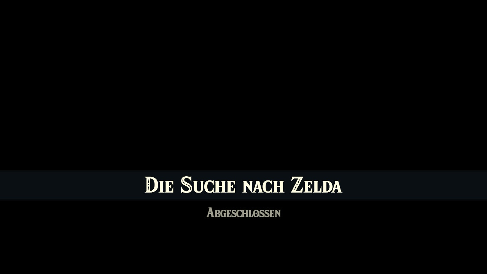

Progress Route: Từ Prologue đến Demon King
Lộ trình tiến trình khuyến nghị (theo fextralife Progress Route + Walkthrough), gộp thứ tự và bước chi tiết. Mỗi vùng: mục tiêu, bước làm, mẹo, ảnh.
1. Prologue – Hyrule Castle Ruins & Great Sky Island portal
Mục tiêu: Traversing Hyrule Castle Ruins, đến Great Sky Island, gặp Steward Construct.
- Thức dậy trong Hyrule Castle Ruins (Decayed Master Sword).
- Đi theo lối, đánh lính Bokoblin/Gibdo nhỏ; nhặt vũ khí cơ bản.
- Nhảy vào hố/rơi xuống → đến Great Sky Island (Room of Awakening).
- Gặp Steward Construct → nhận Purah Pad, Zelda ở Temple of Time.
Mẹo: Nhặt Archaic Warm Greaves trong cây rỗng gần Gutanbac Shrine (kháng lạnh). Không lao vào Hyrule Castle sớm.

2. Great Sky Islands – 4 Shrine & Temple of Time
Mục tiêu: Học 4 năng lực (Ultrahand, Fuse, Ascend, Recall), mở cửa Temple of Time, nhận Heart Container, nhảy xuống Hyrule.
Room of Awakening
- Tỉnh dậy, nhặt Decayed Master Sword. Điều tra vòng tròn giữa phòng → mở cửa. Đi theo đường, nhặt Archaic Legwear. Thấy ánh sáng → nhảy xuống đảo.
Tìm Zelda / Purah Pad
- Gặp Construct ostility → đánh hoặc bỏ qua. Đi đến cuối đảo, chạm Construct ngủ → nhận Purah Pad. Đi theo Sky Islands về phía bắc đến Temple of Time. Cửa đóng → gặp Rauru, nhiệm vụ mở cửa.
The Closed Door – 3 Shrine đầu
- Ukouh Shrine (Ultrahand): Tây Temple of Time, lên cầu thang. Học Ultrahand. Làm cầu qua khe, dán hook lên ván → ski-lift. Nhận Light of Blessing.
- In-isa Shrine (Fuse): Nam, qua hồ. Học Fuse. Fuse đá vào kiếm phá tường; Fuse fire fruit vào tên bắn lá; Fuse vào khiên. Nhận Light of Blessing + Energy Cell.
- Gutanbac Shrine (Ascend): Đông nam, qua Pondside Cave, Mining Cave. Học Ascend. Qua hang tối (Brightbloom), làm thuyền fan, xe goòng. Nhận Light of Blessing.
Quay về Temple – Recall
- Dùng Wing Zonai device lướt về Temple. Cửa mở một phần → vào trong → pedestal → cutscene → học Recall. Dùng Recall trên bánh xe nước phía sau để ra sau temple. Goddess Statue: chưa đủ Blessing (cần 4).
Nachoyah Shrine – Recall test
- Fast travel về Room of Awakening. Dùng Recall trên bánh xe để vào phòng trên-trái. Đi đến Nachoyah Shrine: dùng Recall trên bánh xe; ở phòng cuối chỉnh kim đồng hồ chồng lên nhau cùng chiều. Nhận Light of Blessing.
Rời Great Sky Island
- Quay Temple of Time, Goddess Statue → đổi 4 Blessing → Heart Container (4 tim), mở cửa sau. Đi theo đường (dùng Ascend), cutscene → nhảy xuống Hyrule.
Nhặt trên Sky Island (đừng bỏ): Archaic Warm Greaves (kháng lạnh), Archaic Tunic, Zonai device, quặng, Energy Cell.

3. Central Hyrule Part I – Lookout Landing & Regional Phenomena
Mục tiêu: Đến Lookout Landing, gặp Purah, nhận Paraglider, kích hoạt tower, bắt đầu Regional Phenomena.
- Skydive từ Temple of Time xuống Hyrule Field phía nam; đi bộ theo road đến Lookout Landing.
- Gặp Purah → báo cáo Great Sky Island; nhận Purah Pad (bản đồ, Camera, Sensor).
- Nói Josha & Robbie → mở nhiệm vụ Depths/Camera Work.
- Tìm Captain Hoz tại First Gatehouse (Hyrule Castle floating) → báo cáo Purah → nhận Paraglider.
- Kích hoạt Lookout Landing Skyview Tower → mở bản đồ & fast travel.
- Đến Temple of Time (đã học Recall) → cutscene Zelda; hoàn thành Nachoyah Shrine (Recall test); đổi Heart Container.
- Quay Lookout Landing → Purah giao Regional Phenomena; đánh dấu 4 vùng: Hebra, Eldin, Lanayru, Gerudo.
- Thu ngựa tại New Serenne Stable; kích hoạt Skyview Tower (Lindor's Brow).
- Camera Work in the Depths: nhảy Hyrule Field Chasm, thắp 2 Lightroots, chụp ảnh statue → nhận Zonaite x5 từ Josha.
- A Mystery in the Depths: theo đường tượng từ Iayusus Lightroot → Great Abandoned Central Mine → học Autobuild.
Thứ tự khuyến nghị: Rito (Wind) → Goron (Fire) → Zora (Water) → Gerudo (Lightning). (Polygon: Rito → Zora → Goron → Gerudo.)
Mẹo: Tránh Lynel/Hinox/construct lớn; nhặt nguyên liệu; nấu món hồi máu; đừng lao vào Hyrule Castle sớm. Mang Brightbloom Seeds cho Depths.

4. Hebra Region – The Vow of Tulin (Wind Temple)
Vùng: Hebra (bão tuyết). Chuẩn bị: 2 cấp Kháng lạnh (Snowquill / món Spicy Pepper), cung + mũi tên, Fire Fruit, Bomb Flower, Keese Eyeball.
Đường đến & Wind Temple
- Nói chuyện Teba & Tulin tại Rito Village (Lake Totori). Cầu chính bị gãy → dùng luồng khí từ lửa + paraglider hoặc Rospro Skyview Tower.
- Leo lên làng; Teba chỉ Harth ở Hebra Trailhead Lodge (đánh dấu bởi 2 đống lửa). Kích hoạt Gatakis Shrine trước.
- Tìm Harth: Tulin đi với Laissa & Gesane đến Hebra South Summit Cave (~-3384, 2485, 0309).
- Trong hang: đốt dây leo gai (Fire Fruit), thắp lại đống lửa lạnh, thả Hylian Pine Cone → luồng khí; Gesane chỉ Tulin hướng đến cây tuyết tùng đơn độc trên Tolonto Peak (~-3152, 2688, 0567).
- Tìm Tulin; Aerocuda đánh cắp Swallow Bow → Tulin gia nhập, cho gust. Ra lệnh gust → glide đến bệ, bắn Aerocuda.
- Bokoblins + Aerocudas thêm; bắn từ bệ. Harth & Gesane đuổi kịp → điều tra bão Hebra Peak.
- Leo Hebra Peak: theo gờ đá vàng, dùng gust vượt khe, mở rương trên cấu trúc vàng đầu tiên, nói Huck ở đỉnh.
- Chuỗi đảo nổi: lướt + gust; cánh buồm tàu = bệ phóng; Ascend qua cột; Mayaumekis Shrine; bệ bóng bay (tấm kim loại + Flame Emitter); Kahatanaum Shrine (điểm lưu).
- Lao vào tâm mây → cutscene → Stormwind Ark (Wind Temple). Kiểm tra kháng lạnh trước khi lao.

Kích hoạt terminal & 5 Turbine
- Kích hoạt terminal xanh ở sàn chính → mở điểm du lịch + đánh dấu 5 turbine (1F, B1, B2). Sau khi kích hoạt 5 turbine, quay về terminal → mở cửa sập trung tâm.
Turbine 1: Sửa cần gạt (1F)
- Nhặt băng nhũ bằng Ultrahand → gắn vào cần gạt bị gãy → xoay để nâng cổng. Vào trong, dùng gust của Tulin. Phòng bên cạnh: cần gạt tương tự → rương Opal.
Turbine 2: Rơi qua tháp (1F→B1)
- Lướt từ luồng khí trung tâm lên mái cấu trúc cao phía bắc. Mở cửa kim loại bằng Ultrahand, rơi vào giếng. Tránh laser đỏ. Paraglider gần đáy → alcove turbine. Rương Soldier Blade trên gờ.
Turbine 3: Bánh xe quay (B1)
- Phá băng nhũ chặn lối (lửa). Bánh xe lớn quay trên khe → dùng Recall đảo chiều → đi qua. Phòng tiếp: cần gạt Ultrahand mở thanh; tường 2 bánh răng thiếu connector → bắn hạ băng nhũ lớn, gắn giữa → bánh răng quay → cổng mở → kích hoạt turbine. Rương Sapphire trong cell.
Turbine 4: Phía dưới (B2)
- Thang B1→B2, theo hành lang đá qua Construct (khối băng ẩn Time Bomb/Portable Pot). Rời cửa sổ, glide dưới vỏ tàu, dùng gust vượt đến underside deck. Đánh bại Construct, kích hoạt turbine.
Turbine 5: Quay cột (B1→1F)
- Hành lang laser đỏ + khe gãy. Vượt laser (rương Ruby), vượt khe bằng gust, đánh Construct, Ascend lên sàn trên. Cột treo trần: gắn phiến đá làm vây, gust quay cột → cửa mở. Leo thang nhanh. Lên 1F, kích hoạt turbine cuối.
Boss: Colgera
- Colgera bay trong bão tuyết; chờ lao xuống → né → bắn mũi tên (có thể Fuse Bomb Flower/Keese Eyeball) vào điểm sáng trên lưng/vùng sáng.
- Pha 2: Colgera tạo băng; phá băng bằng mũi tên/bom → lộ điểm yếu → bắn liên tục.
- Phần thưởng: Heart Container + Vow of Tulin (Wind ability khi lướt). Dọn bão tuyết Hebra.

Mẹo boss: Mang bữa ăn hồi máu không ghi đè kháng lạnh; fuse Bomb Flower vào mũi tên để phá băng nhanh; giữ paraglider khi lao để điều chỉnh.
5. Eldin Region – The Vow of Yunobo (Fire Temple)
Vùng: Eldin/Death Mountain. Chuẩn bị: Flame Guard (Flamebreaker armor / Fireproof Elixir), đồ chịu nóng ban ngày; vũ khí không phải gỗ; Hydrant; mũi tên đá.
Đánh bại Moragia & Đến temple
- Moragia: dùng Zonai wing (có steering stick), kích hoạt charge của Yunobo khi approach mỗi đầu. 1 đòn/đầu.
- Sau Moragia: đi theo Yunobo đến Fire Temple entrance.
5 Gong (Fire Temple)
Gong 1: Slab bridge
- Dùng Ultrahand kéo slab đá làm cầu qua lava. Kích hoạt gong.
Gong 2: Recall slab target
- Phá ice block; dùng Recall trên slab đã rơi để đưa lên cao → kích hoạt gong.
Gong 3: Minecart track
- Đi theo đường ray minecart; dùng Recall/Ascend để vượt; kích hoạt gong.
Gong 4: Bridge planks
- Ultrahand ghép ván gỗ làm cầu; kích hoạt gong.
Gong 5: Final
- Theo đường lên cao; kích hoạt gong cuối → mở cửa boss.

Boss: Marbled Gohma
- Gohma bám trần; Yunobo charge vào chân/điểm sáng trên lưng.
- Khi ngã: tấn công điểm sáng; tránh sét/đá rơi.
- Pha 2: Gohma leo tường; Yunobo charge vào mắt/điểm sáng; lặp lại.
- Phần thưởng: Heart Container + Vow of Yunobo (Fire charge).

Mẹo: Mang Flamebreaker set; vũ khí gỗ cháy → dùng đá/metal. Hydrant rửa lava. Fuse đá vào vũ khí tăng sát thương.
6. Lanayru Region – The Vow of Sidon (Water Temple)
Vùng: Lanayru/Zora's Domain (sludge). Chuẩn bị: Splash Fruit nhiều, Hydrant shield, Zora Armor, Ancient Arowana.
Sludge & Zora's Domain
- Đến Zora's Domain (bị sludge phủ). Rửa tượng bằng Splash Fruit. Nói Yona. Đến Mipha Court gặp Sidon.
- Toto Lake: rửa bùn mảnh phiến Jiahto bằng Splash Fruit → ghép vào tường → manh mối Floating Scales Island.
- Tìm Ancient Arowana (Lulu Lake/Zora River) → mang cho Yona → nhận Zora Armor (bơi ngược thác).
- Pristine Sanctum (dưới Domain): nói King Dorephan → nhận King's Scale. Đến Floating Scales Island bằng Zora Armor → bắn King's Scale qua stone tear.
Water Temple (Wellspring Island)
- Đến Wellspring Island (bầu trời) qua thác; vào Water Temple.
- Kích hoạt terminal → đánh dấu 4 faucet. Mở cửa nước bằng Ultrahand/Recall.
- Ball socket puzzle: gắn ball vào socket → mở cổng. Paddle repair: Ultrahand sửa paddle.
- Gate lifted: dùng Recall trên gate để nâng.
- Tower switch: Fuse arrow bắn switch.

Boss: Mucktorok
- Mucktorok ẩn trong sludge; dùng Splash Fruit bắn trúng → lộ thân → đánh.
- Pha 2: Mucktorok lớn hơn; lặp lại Splash Fruit → tấn công.
- Phần thưởng: Heart Container + Vow of Sidon (Water shield).

Mẹo: Mang Splash Fruit nhiều; Zora Armor giúp bơi ngược thác; Hydrant shield rửa diện rộng.
7. The Master Sword – Trail & Recovery
Mục tiêu: Vào Korok Forest qua Depths, đánh Phantom Ganon, nói Great Deku Tree, kéo Master Sword từ Light Dragon.
- Vào Korok Forest qua Depths: Minshi Woods Chasm phía đông nam Great Hyrule Forest.
- Kích hoạt Lightroots: Uihcoke → Eknupup → Rikonasum để mở bản đồ Depths.
- Dùng Ascend qua trần để lên Korok Forest.
- Enter Deku Tree base: rơi xuống chasm giữa phòng.
- Đánh Gloom Hands: dùng Bomb Flower arrows từ ledge; Sundelion dishes hồi máu gloom.
- Đánh Phantom Ganon: perfect dodge → Flurry Rush; tránh gloom.
- Nói Great Deku Tree: nhận memory; Master Sword đang di chuyển ở góc đông bắc Hyrule (Light Dragon).
- Theo dấu Light Dragon: theo marker trên bản đồ. Phóng từ Skyview Tower, skydive đến Light Dragon.
- Tiếp cận đầu rồng: paraglide; chờ Master Sword phát sáng. Kéo Master Sword (cần đủ stamina/heart; giữ stamina food).
- Nhận Master Sword: sword tự hồi durability.
Mẹo: Chuẩn bị Sundelion dishes; Bomb Flower arrows hiệu quả; perfect dodge dễ hơn khi giữ khoảng cách. Không tấn công rồng.
8. Gerudo Region – The Vow of Riju (Lightning Temple)
Vùng: Gerudo Desert (sand shroud). Chuẩn bị: đồ chịu nóng ban ngày/lạnh ban đêm, mũi tên, Bomb Flower, elixir kháng sét.
Đến Gerudo Town
- Đi từ Lookout Landing về tây nam; theo đường đến Gerudo Canyon Skyview Tower → paraglide.
- Qua sandstorm: theo stone markers; đến Gerudo Town.
- Gặp Riju → nhiệm vụ bảo vệ town khỏi Gibdo.
Lightning Temple
- Theo Riju vào sa mạc; tìm 4 pillars (mirror puzzles) để mở temple.
- Mirror in sand: phản chiếu ánh sáng vào switch.
- Mirror on pillar: điều chỉnh góc.
- Platform mirror high switch: Fuse/Ascend.
- Triangle of light: hoàn thành tam giác.

Boss: Queen Gibdo
- Queen Gibdo bay; dùng Riju's lightning (Vow) để phá shield.
- Khi hạ: tấn công bằng vũ khí mạnh; tránh swarm Gibdo.
- Pha 2: Queen Gibdo lớn hơn; lặp lại lightning → tấn công.
- Phần thưởng: Heart Container + Vow of Riju (Lightning).

Mẹo: Mang elixir kháng sét; fuse shock fruit; giữ khoảng cách khi swarm. Mirror puzzles cần ánh sáng mặt trời.
9. Fifth Sage – Secret of the Ring Ruins & Guidance from Ages Past
Mục tiêu: Tìm Sage thứ 5 (Mineru) qua Ring Ruins → Dragonhead Island → Spirit Temple (Depths).
- Kakariko Village: nói Paya & Tauro gần floating Ring Ruins. Leo ruins; chụp ảnh tablet bằng Camera → quest bắt đầu.
- Đến Thunderhead Isles (bầu trời đông bắc): thu Charged armor set (cap, tunic, trousers) để chịu sét trong bão.
- Quay về Ring Ruins: dùng Zonai Charge/kích hoạt beam theo manh mối; theo tia sáng xuống Depths/đến Dragonhead Island.
- Đến Dragonhead Island: bầu trời, tìm mask Zonai → mở Guidance from Ages Past.
- Theo beam của mask xuống Depths → Spirit Temple area (Faron Grasslands Depths ~1367, -3309, -0737).
- Rebuild Mineru's Construct: thu parts từ storehouses (NE Right-Leg Depot, SE Left-Leg Depot, Left-Arm/Right-Arm Depot) bằng Ultrahand; lắp chân, tay, thân, core.
- Đánh Seized Construct: boss trong construct; dùng Mineru's construct abilities.
- Nhận Vow of Mineru (Spirit): Mineru trở thành Sage of Spirit.

Mẹo: Cần chịu sét (Charged set/elixir); mang Brightbloom Seeds; tránh gloom; xem phần Spirit Temple trong lộ trình (Fifth Sage) cho chi tiết boss.
10. Defeat the Demon King – Hyrule Castle Depths
Mục tiêu: Xuống dưới Hyrule Castle, đánh quân Phantom Ganon, Ganondorf (pha 1), Demon Dragon (pha 2), skydive bắt Zelda.
- Travel to Lookout Landing → Purah: Regional Phenomena complete. Purah spots Zelda in Hyrule Castle → rescue.
- Look for Dragon's Tear in nearby geoglyph (Impa and the Geoglyphs).
- Trail of the Master Sword (nếu chưa): Korok Forest → Phantom Ganon → Great Deku Tree.
- Xuống dưới Hyrule Castle qua chasm vào Depths.
- Đánh quân đội Phantom Ganon (nhiều cùng lúc) → dùng sage abilities.
- Đánh Ganondorf (pha 1): né charge, phản công; dùng Master Sword + sage vows.
- Đánh Demon Dragon (pha 2): bay paraglider, Fuse light vào tên, bắn mắt/sừng.
- Skydive bắt Zelda → kết thúc game.


Mẹo: Chuẩn bị vũ khí mạnh, bữa ăn hồi máu, sage vows; fuse light cho Demon Dragon. Xem endgame notes.